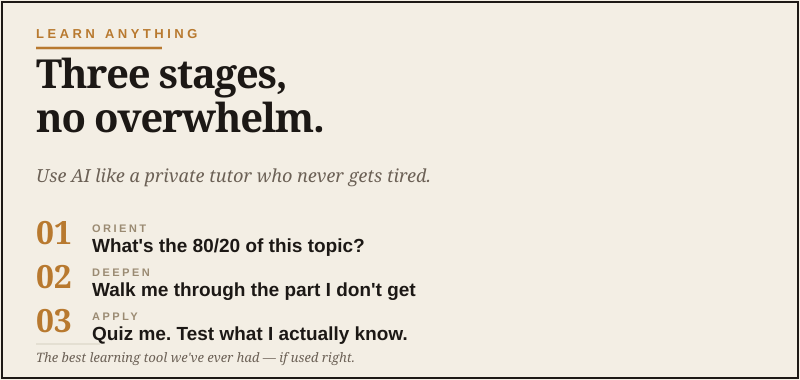

The Learning Edge
The best teacher we've ever had — if you use it right.

One of the quietly great things about being in your 40s, 50s, or 60s is that you’ve finally got the bandwidth to pick up things you were always curious about but never had time for. Woodworking. Photography. A new instrument. A foreign language. Astronomy. Investing. Cooking something other than what you’ve been making for thirty years. Fly fishing. Restoring a vehicle. Writing. For me, chasing the history behind places I travel has become one of the best parts of the whole adventure.
AI is the best learning tool ever invented for this kind of thing. Better than YouTube, better than books alone, better than any structured course. It’s patient, infinitely available, will answer the basic question you don’t want to ask in front of a class, and will adjust to exactly your level.
But — and this is the part nobody talks about — it’s also genuinely easy to use AI in a way that makes you feel like you’re learning while not actually learning anything. That’s the trap. Reading about push-ups does not make your chest stronger. Unfortunately. Here’s how to avoid that and actually get good at the thing.
AI is a great teacher. It is not a substitute for doing the thing. The fastest way to fool yourself is to confuse reading about something with practicing it.
Stage one: get oriented in the territory
Before you commit time to a new skill, AI is excellent for figuring out what you’re actually getting into. The shape of the field. The vocabulary. The branches. The common starting points.
You’ll come out of that with a clear-eyed map of the territory. That alone will save you from a thousand bad starts.
Stage two: find the right starting path
Most things you can learn have multiple entry points. Some are good for beginners. Some are traps that send people away.
This second prompt is gold. Experts often forget what was hard about beginning. AI is good at separating “what experts wish you’d do” from “what actually works for beginners.”
Stage three: use AI as your daily tutor
This is where the actual learning happens. Once you’re practicing, AI is a remarkable on-demand tutor for the questions that come up.
Some examples of how this works in practice.
For a physical skill (woodworking, fly fishing, photography)
You hit a problem mid-practice. The wood is splitting where you don’t want it to. The cast isn’t landing right. The photos are coming out flat.
Better than searching forums where five people give you contradictory advice and one guy tells you to buy something expensive. The AI can synthesize and tell you the most likely cause based on what you described.
For a knowledge topic (history, finance, philosophy)
You’re reading about something and you hit a concept that doesn’t click.
The “three different ways” move is unbelievably effective. One of the three usually clicks.
For a language
AI is shockingly good at language tutoring now. You can have entire conversations in the language you’re learning, get corrections, ask why a sentence is wrong, request alternative phrasings.
The trap: passive learning
Here’s where most people go wrong. They start using AI as a substitute for doing the actual thing. They read about woodworking. They read about photography. They read about their new language. They have great conversations with AI about the topic and feel productive.
But they don’t do the thing.
They never make the cut. Never take the photo. Never speak the language out loud. Never write the actual essay. And six months later they realize they’ve learned a lot of vocabulary about their hobby but haven’t actually gotten any better at it.
The rule: AI is the warm-up, the practice is the workout. If you’re spending more time chatting with AI about your skill than doing it, the ratio is wrong.
The expert-finder move
One last technique. Use AI to find the actual humans worth following in your field.
This often surfaces the deeper-cut people who do the real work but don’t have huge marketing presence. Those are usually who you want to learn from.
Why this matters
Picking up new things in midlife isn’t just a hobby. It’s how you stay alive intellectually. Guys who keep learning past 50 stay sharper, more interesting, more capable, and more engaged with the world. Guys who stop learning calcify.
AI lowers the cost of starting almost any new skill from “buy a course, find a teacher, hope you didn’t waste your money” to “open the app and start.” That’s a meaningful change in what’s available to you.
The opportunity is to use it well — to learn faster, smarter, and with less wasted effort than any previous generation could have. The trap is to use it to feel productive while never actually doing the thing.
Stay on the right side of that line.